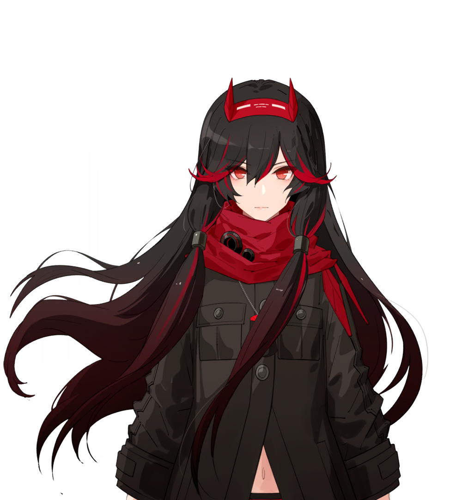
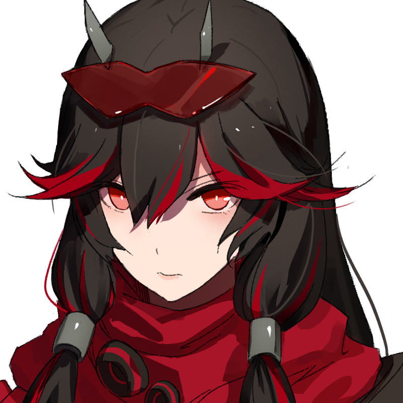
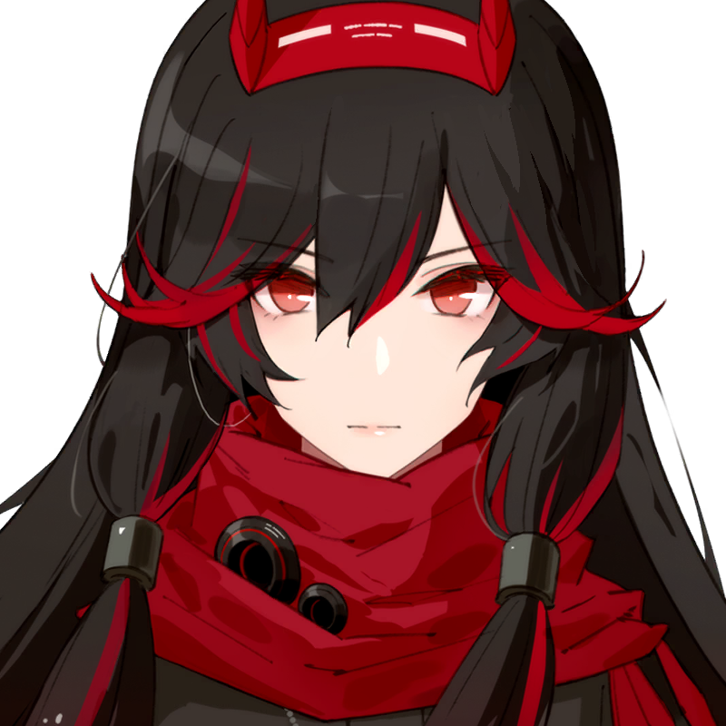

ルシア・紅蓮
グレイレイヴンの隊長。常に任務遂行を優先するため感情表現は少し苦手だが、仲間思いで、自己犠牲精神の持ち主。
推奨意識・武器・補機編成
編成1使う場面：汎用
| 意識編成 | （構成：バートン 4点セット＋フリードリヒ 2点セット） |
|---|---|
| 意識共鳴 | 攻撃+15系 ×6／コアパッシブ ×6 |
| 武器共振 | コンデリーナ（優先度：低） |
| 武器 | 画像紅蓮狂刃 刀 |
| 武器共鳴 | デッドライン／無窮の栄光／シャイニング |
| 補機 | 画像（補機名） |
※編成情報の更新日時：2025年11月23日
基本情報

| 機体番号 | BPL-01 | 初期クラス | B |
|---|---|---|---|
| 型式 | 攻撃型 | 属性 | 物理80%／火20% |
| エフェクト | なし | 武器種 | 刀 |
| 所属部隊 | グレイレイヴン小隊 | CV | 石川由依 |
| アイコン |  極アイコン宿舎アイコン 通常アイコン | ||
関連機体
スキル
すべてスキルLv18での表記です。
基本スキル
| 赤シグナル | 紅蓮 - 初式 前方を突く。チェイン数に応じて266.72／533.32／800%の物理ダメージ。獲得効果：牽引 |
|---|---|
| 黄シグナル | 紅蓮 - 閃撃 目標に素早く1回の攻撃。チェイン数に応じて150／300／450%の物理ダメージ。付与効果：ノックバック |
| 青シグナル | 紅蓮 - 波動斬 武器に爆炎を纏わせる。チェイン数に応じて100／200／300%の物理ダメージ。獲得効果：チェイン数に応じて10／15／20%の火属性ダメージ付与、4／4／6秒持続 |
| 通常攻撃 | 紅蓮 - 迅刀 敵を連続で斬り伏せる。合計540%の物理ダメージ |
特殊スキル
| コアパッシブ | 紅蓮 - 二刀術 爆炎モード：3チェイン＋4秒以内の赤ショットで発動。通常攻撃が「二刀術」に置換され、5.5秒持続。二刀術：敵に連続で攻撃を叩き込む。合計1080%の物理ダメージ |
|---|---|
| 必殺技 | 紅蓮乱舞 必殺技エネルギー100Pt消費。前方の敵に高速の斬撃を与える。一撃につき140%の物理ダメージ、最後の一撃で1000%の物理ダメージ |
| QTE | 蓮花斬 二刀流で敵を攻撃。合計1110%の物理ダメージ |
汎用効果
| 隊長スキル | 勇猛 攻撃型汎用隊員：攻撃力10%上昇 |
|---|---|
| 型式スキル | 攻撃型 追加ダメージ効果が20%上昇 |
| 極・解放 | 戦闘開始時、シグナルを3つ獲得 |
進化効果
| SS追加スキル | 閃追斬 ノックバック中の対象への攻撃で、20%の物理追加ダメージ |
|---|---|
| SSS追加スキル | 不死の刃 コアパッシブ「爆炎モード」：追加ダメージ効果が15%上昇 |
| SSS+追加スキル | 明鏡止水 通常攻撃「紅蓮 - 迅刀」：追加ダメージ効果が15%上昇 |
躍進
| 躍進スキル | （未入力） |
|---|
短評・メモ
育成非推奨、推し専。
攻略メモ
- 全ての攻撃において回避キャンセルした場合、攻撃は中断される。この場合において利点はない。
- コアパッシブ中はシグナルを獲得できず、頑強は付与されていない。
- 通常攻撃は敵を貫通せず、同様にシグナルスキルにおいても貫通することはない。